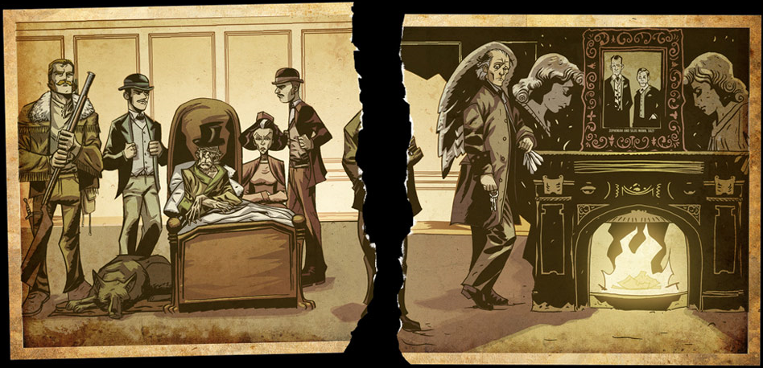
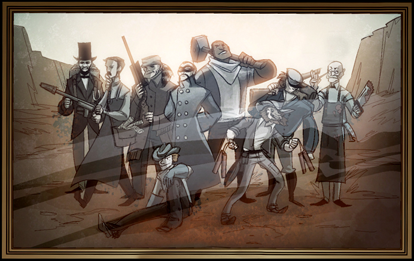
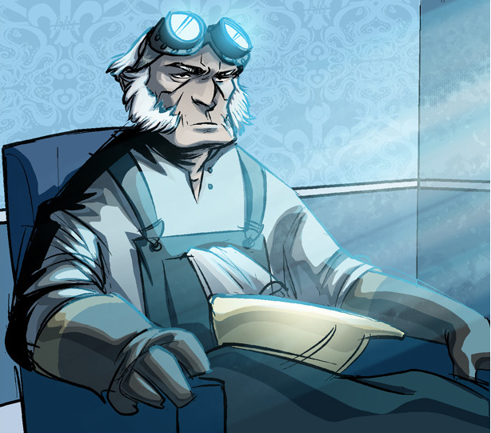
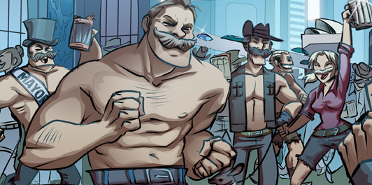

Story
Although Team Fortress 2 does not have a story mode or single-player campaign, the storyline of the game has been revealed through comics, Meet the Team videos, and major updates. For example, the Halloween update of October 2009 (and Halloween update of October 2010 and 2011), WAR! Update of December 2009, and Engineer Update of July 2010 have all added to the official Team Fortress continuity in one way or another.
Don't want to read? Here is a handy link.
Lore in a minute TF2 explanation
1822
Mann Family
(From left to right: Barnabas Hale, Blutarch Mann, Zepheniah Mann, Elizabeth, Redmond Mann, A mysterious man (Possibly Gray Mann) seen in the tear, and Silas Mann.)
The Mann family's backstory begins in the 19th century with the wealthy Englishman Zepheniah Mann. Zepheniah Mann was the owner and proprietor of Mann & Sons Munitions Concerns – which also went by the name of Zepheniah Mann & Sons Co., but is better known by the name of Mann Co.. His wife, Bette, gave birth to three sons in September 2nd of 1822; Redmond, Blutarch and Gray, but died in childbirth. Though Redmond and Blutarch were perfectly normal, Gray was underweight, and had learned to talk inside the womb. Zepheniah ordered the baby to be smothered, but he was abducted by an eagle during the "Great Eagle Scourge of 1822." The remaining Mann brothers grew up without knowledge of their missing brother. Gray was well cared for by his eagle abductor. He was fed grubs and mice, kept warm under her breast and accepted by her children. Gray grew strong under the eagle's care and when he was strong enough he killed her and her children and ate them all before crawling back to civilization.
1850
Zepheniah's Will
Around 1850, Zepheniah traveled to the United States with Redmond and Blutarch, to expand the munitions business. When they arrived, they discovered the gravel pits and dustbowls that he had purchased were useless; in addition, Zepheniah had contracted numerous illnesses in his old age. With his last will and testament, Zepheniah set up the events of Team Fortress 2 by leaving half of his land to each of his sons – for them to fight over for the rest of their lives. He also left Elizabeth the "miracle gravel" cache that he discovered on a trip to "Terra Australis". According to him, Gray had resurfaced the year before and wanted to blackmail him for it, so he entrusted Elizabeth with it, to keep it secret and safe.
Beginnings of RED vs. BLU
Comprised of Billy the Kid, Stonewall Jackson, Abraham Lincoln, Alfred Nobel, John Henry, Nikola Tesla, Sigmund Freud, Davy Crockett, and Fu Manchu, Blutarch had his crack mercenary team set and was eager to claim his land. However, Redmond had assembled his own team of mercenaries and was making similar plans to gain control of his brother's land. The RED and BLU teams proceeded to enter into a massive stalemate as they attempted to destroy each other and take the land for their respective Mann sibling.
1890
Forty years later, Redmond and Blutarch were still engaged in their unwinnable war.
As Blutarch neared death from old age, he called in an expert craftsman named Radigan Conagher to construct for him a machine that would allow him to live on, to "make [him] a monster", by artificially extending his life. Radigan agreed. 
Upon returning to his store that evening, Radigan found a stranger who had already made her way past his locked door. Knowing she couldn't convince Radigan to change his mind about building Blutarch's life extender, this stranger asked Radigan to build Redmond a machine as well. As payment, she gave him a hundred pounds of Australium – a powerful element found only in Australia which had caused the nation of unintelligent savages to become extremely intelligent and develop such technological marvels as teleportation and cloaking techniques. 
Radigan agreed and became super-intelligent with the Australium. He went on to develop life extending machines for Redmond, Blutarch, and a far more advanced life extender for Gray Mann.
1968
Gravel War
- This is the main setting for the in-game events of Team Fortress 2.
During the Summer of 1968, nine individuals - the Scout, the Soldier, the Pyro, the Demoman, the Heavy Weapons Guy, the Engineer, the Medic, the Sniper, and the Spy - were recruited by Reliable Excavation & Demolition (RED) and Builders League United (BLU) to continue Redmond and Blutarch's neverending war to seize the land left to them by their deceased father.
Helen, a descendant of Elizabeth, acts as the overseer of the large-scale battles fought amongst these nine mercenaries. Descendant of Barnabas Hale, Saxton Hale, runs the renowned weapons and headwear business Mann Co., a subsidiary of the Administrator's shadowy company, TF Industries.
Recent developments
Our first major plot event occurs when the RED Demoman and BLU Soldier meet and become friends at an explosives convention, which severely angers the Administrator as they may share information about their job and discover they're working for the same person. With the help of Saxton Hale, she misleads both men into thinking the other is trying to kill them, sparking a bloody war.
At around the same time, in an attempt to rid themselves of weapons involved in a Senate investigation, Mann Co. sends a "monkeynaut" named Poopy Joe into space. The rocket is originally fueled with liquid Australium; shortly before takeoff, Saxton Hale replaces the Australium with defective suitcase explosives. As a result, the rocket crashes, killing Poopy Joe. Saxton unsuccessfully tries to cover up the event in subsequent Senate hearings.
The next major event occurs when Blutarch Mann realizes his life support machine is breaking. Blutarch contacts our BLU Engineer, the grandson of Radigan Conagher, to fix it.
Later, Saxton Hale discovers the Internet (which notably did not exist in the 1960s) and uses it to open the online Mann Co. Store for players to purchase weapons and items.
1971
Gray Mann, seeking to take control of Reliable Excavation and Demolition and Builder's League United, sent two tear-stained letters to each of his brothers in secret, hoping to get them to meet with each other. Redmond and Blutarch rented the Alamo, and apparently transported it to New Mexico for their meeting, guarded by a group of Engineers under Redmond's employ. Blutarch proposed the idea of a truce, and foolishly suggests the idea of a pregnancy machine, stating that they can use it on one of them to produce an heir, ignorant of the absurdity of the plan. Blutarch states that because of the pointless fighting all of their life, the Mann Family Line would die out. Redmond agreed, and the two shook hands, each thanking each other for "sending" the tear-stained letter to the other.
After the two shake, Gray enters the Alamo, having killed Redmond's Engineers, leaving the three alone. He introduces himself to the two as Gray Mann, their brother, and explains that he sent the letters. Unfortunately, the two appear to be suffering some sort of cognitive disorder, and Blutarch and Redmond apparently forget who Gray is just seconds after he introduces himself. It is noted that Gray appears to be wearing some sort of mechanical device on his spine, possibly of his construction. Gray begins to recount the tale of the brothers' birth, and explains how he was taken by an eagle shortly after he spoke with their father. He explains how he was raised by the eagle as one of its own, and how he later killed it and her children to feed himself.
He goes on to explain how, unlike how Redmond and Blutarch had their empires handed to them, he had to build his own out of scratch. Gray tells Redmond and Blutarch that he watched for a hundred and fifty years as they both wasted their father's fortune over an "asinine war, over worthless pits of gravel." He asks them to consider their true birthright, and tells them that it's "the only thing in this hell-blasted landscape actually worth fighting over" which appears to be Mann Co. Redmond dismisses his claims, stating that gravel powers the world's steam engines, showing how uninformed about the world he actually is. Gray grows tired of his responses, and kills both Redmond and Blutarch by slitting their throats.
Three days later, Gray makes his move against Mann Co., sending a massive robot army to attack all of the company's facilities. Saxton Hale is too busy wrestling a Yeti to deal with the crisis himself, so he sends a video message to the RED and BLU mercenaries informing them that with Redmond and Blutarch dead, the Gravel War has finally ended and they no longer have jobs. He then immediately re-hires both teams to defend Mann Co. against the robots.